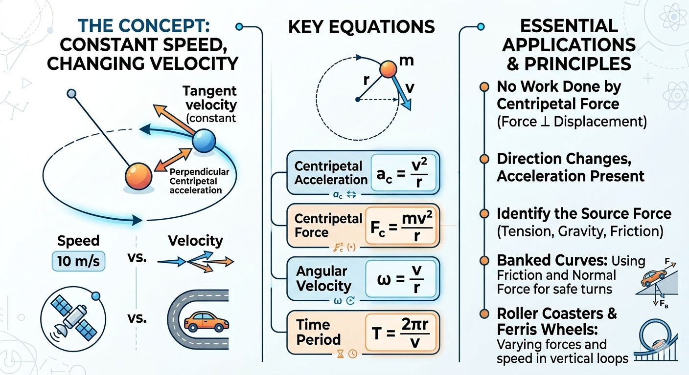

Uniform Circular Motion: Concept, Equations, and Shortcuts

Image generated by Google AI
What Is Uniform Circular Motion?
Uniform Circular Motion (UCM) refers to the motion of an object traveling at constant speed along a circular path. Although the speed remains constant, the direction of the velocity continuously changes, meaning the object is accelerating. This acceleration is called centripetal acceleration, and it always points toward the center of the circular path.
Such motion is common in daily life—examples include a satellite orbiting Earth, a fan blade spinning, or a car turning in a circular track. UCM is an example of two-dimensional motion with constant magnitude of velocity but changing direction.
Key Equations
For a body of mass \( m \) moving in a circle of radius \( r \) with constant speed \( v \):
- Centripetal Acceleration:
\[ a_c = \frac{v^2}{r} \]
- Centripetal Force:
\[ F_c = m a_c = \frac{mv^2}{r} \]
- Angular Velocity:
\[ \omega = \frac{v}{r} \]
- Relation Between Linear and Angular Quantities:
\[ v = r \omega, \quad a_c = r \omega^2 \]
- Time Period and Frequency:
\[ T = \frac{2\pi r}{v}, \quad f = \frac{1}{T} = \frac{\omega}{2\pi} \]
Shortcut Concepts
- Speed is constant, but velocity is not (due to changing direction).
- Acceleration is always directed toward the center (centripetal).
- No work is done by centripetal force (force is perpendicular to displacement).
- Angular velocity remains constant in UCM.
- Frequency is the number of revolutions per second.
Examples
-
A stone tied to a string of length 2 m is whirled in a horizontal circle with speed 4 m/s. Find centripetal force if the mass is 0.5 kg.
\[ F_c = \frac{mv^2}{r} = \frac{0.5 \cdot 16}{2} = 4\,\text{N} \]
-
A car moves in a circle of radius 10 m with angular speed \( 2\,\text{rad/s} \). Find linear speed and centripetal acceleration.
\[ v = r \omega = 10 \cdot 2 = 20\,\text{m/s} \]\[ a_c = \frac{v^2}{r} = \frac{400}{10} = 40\,\text{m/s}^2 \]
Concept Questions with Explanations
-
Is there acceleration in UCM?
Yes, even though speed is constant, direction changes continuously, resulting in centripetal acceleration. -
Is centripetal force a separate force?
No, it is the net inward force (like tension, gravity, or friction) that causes circular motion. -
Can work be done in UCM?
No, since force is perpendicular to displacement, no work is done. -
What provides centripetal force in planetary motion?
Gravitational force acts as the centripetal force. -
What happens if centripetal force is removed?
The object will move tangentially to the circle due to inertia.
Super Tips for Solving Fast
- Remember: Centripetal acceleration \( a = \frac{v^2}{r} \) and not zero.
- For angular motion, use \( v = r\omega \) and \( a = r\omega^2 \).
- Always identify what provides the centripetal force (tension, gravity, friction).
- Time period is total time for one complete circle: \( T = \frac{2\pi r}{v} \).
Previous Year Questions (PYQs)
Q1.
Two particles A and B are moving in uniform circular motion in concentric circles of radii \( r_A \) and \( r_B \) with speeds \( v_A \) and \( v_B \) respectively. Their time periods of rotation are the same. The ratio of angular speed of A to that of B will be:
(NEET 2019)
(a) \( v_A : v_B \)
(b) \( 1 : 1 \)
(c) \( r_B : r_A \)
(d) \( r_A : r_B \)
Solution:
Given:
- Particles A and B perform uniform circular motion.
- They move in concentric circles with radii \( r_A \) and \( r_B \), and linear speeds \( v_A \) and \( v_B \).
- Their time periods are equal, i.e., \( T_A = T_B = T \).
We know the relation between linear speed \( v \), radius \( r \), and time period \( T \):
Applying this to A and B:
Now, angular speed \( \omega \) is given by:
So,
Thus,
Answer: \( \boxed{1 : 1} \)